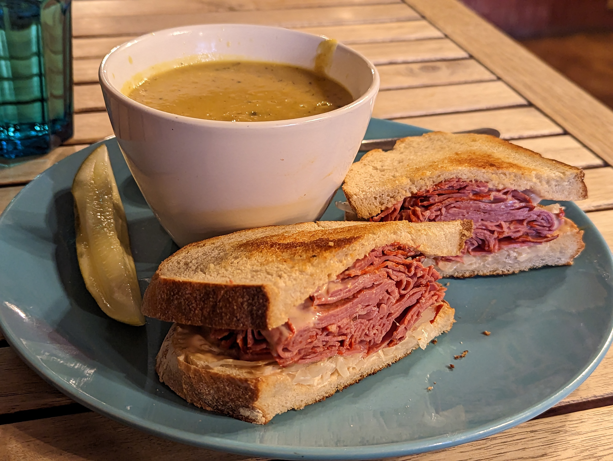
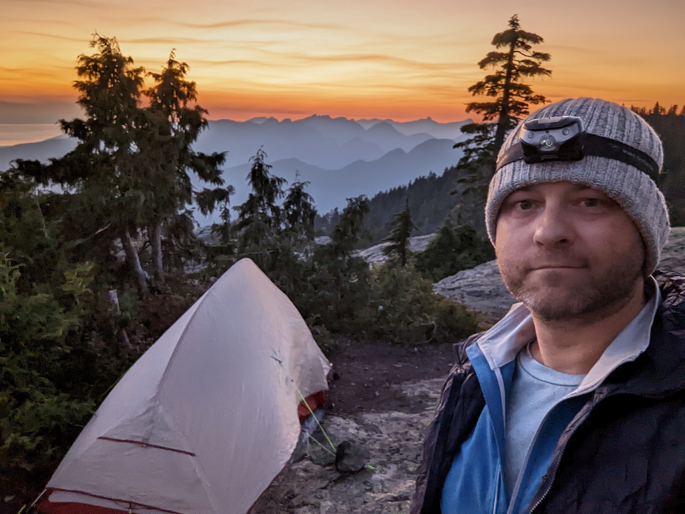
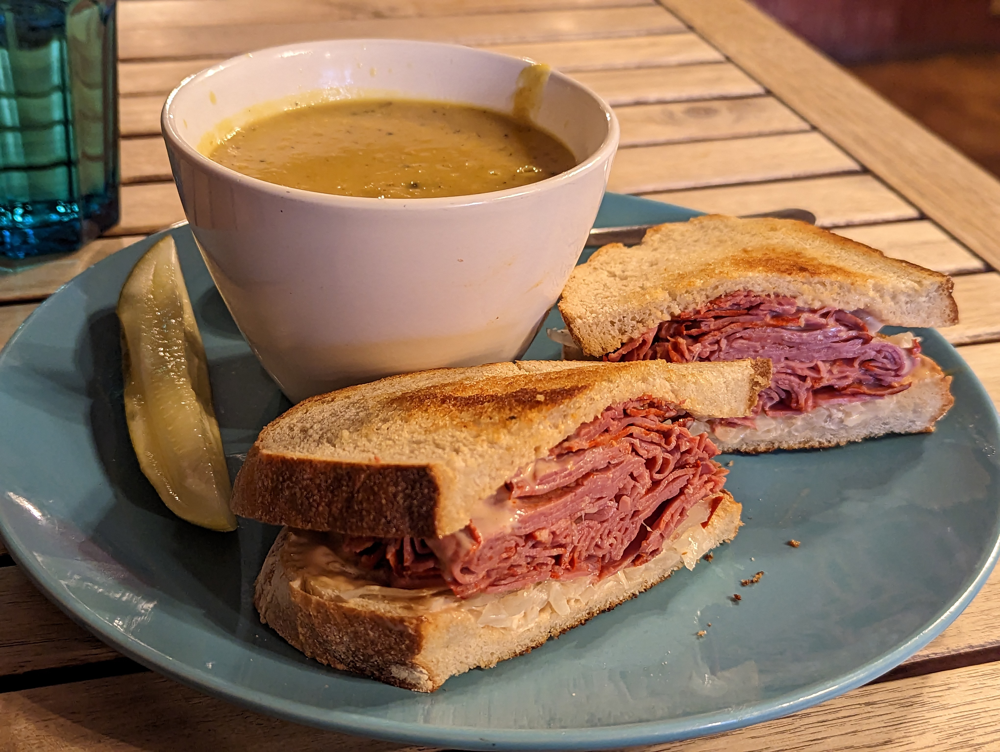
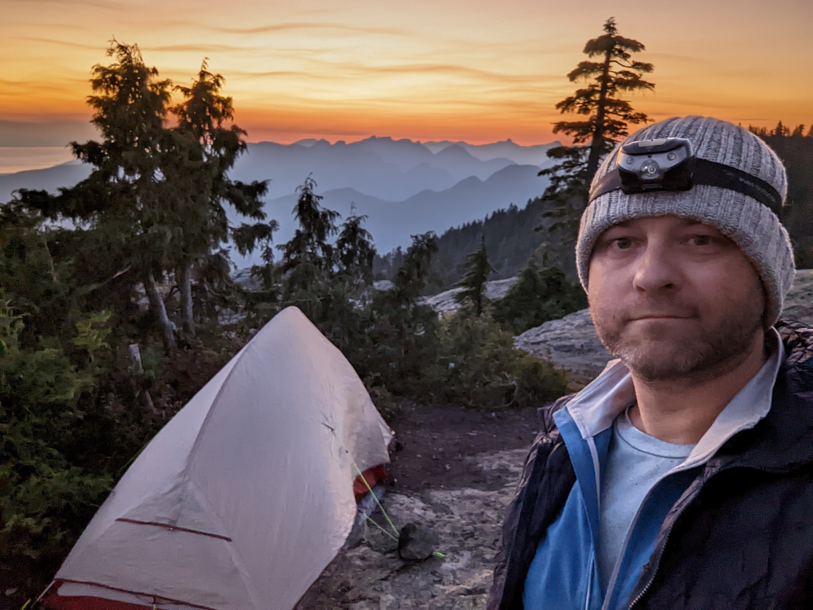
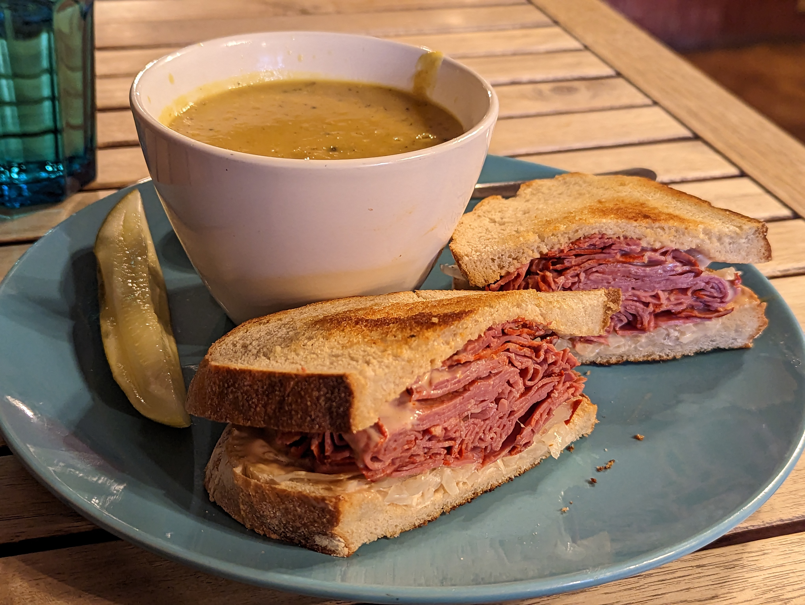
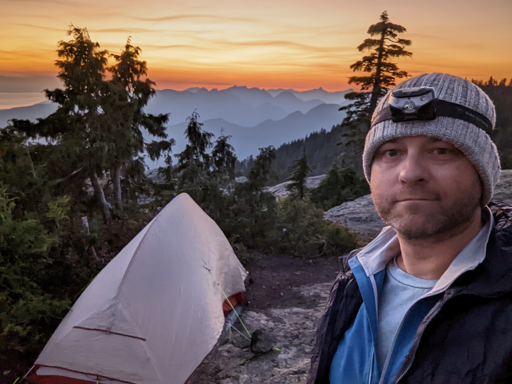

My name is Cezary.I am a meat-encased conciousness and like experiencing all that the universe has to offer. My fav things so far are orbital mechanics, sandwiches, and backcountry camping. I also really like complex technology puzzles and being told "it can't be done".My current career has me tackling enterprise networks and distributed web application performance.

